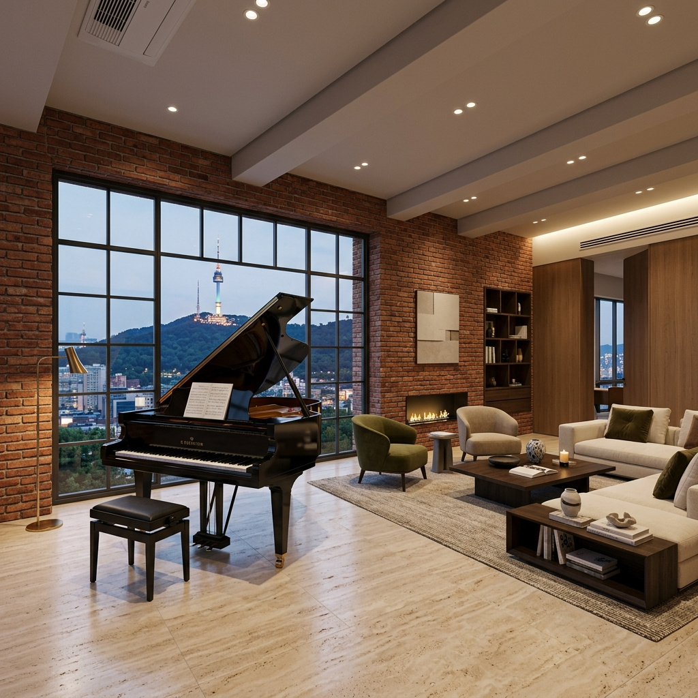

Generative Architecture
데이터가 만드는
건축 물리학의 미래
지역 이름만 입력하면 기후 API와 물리 엔진이 결합하여
단열, 차양, 자재를 실시간으로 결정합니다.
Climate Intelligence Dashboard
현재 선택 지역: Loading...
Insulation (R-Val)
--
Ceiling Height
--
Topography
--
Shading Depth
--
Window Ratio
--
Primary HVAC
--
Hillside Section View (Hannam-dong)
북쪽 구릉 지형을 활용한 계단식 단면 및 2400mm 낮은 층고 설계
3F: Luxury Bath
2F: Bedroom & Studio
1F: Living & Piano
Ceiling: 2,400mm
Northern Hill Slope (Namsan-side)
AI Optimization Heatmap
남산 조망 지수(View Score)와 동선 효율(Circulation)의 실시간 물리 분석
Namsan View Ray
Circulation Flow
High Value Point
3D AI Digital Twin Analysis
3ds Max 모델 기반 동선 최적화 및 조망 지수 정밀 수치 분석 (Hannam Edition)
Step 4: Photorealistic Space Analysis
3ds Max V-Ray 렌더링 기반 공간별 AI 최적화 및 거주 환경 분석

LIGHTING
AIR QUALITY
Spatial Infrastructure & SLO Dashboard
Meta-level Reliability: 99.99% Target | 12ms Edge Latency
Cluster Health
ONLINE
Nodes12 Active
Avg CPU14%
Memory42.1GB / 128GB
Data Stream (Redis)
Hit Rate99.8%
Ops/Sec42.5k
Network Traffic
Active Users214
Bandwidth8.2Gbps
Latency12ms
Error Budget (SLO)
Target99.99%
Remaining52min/yr
StatusHEALTHY